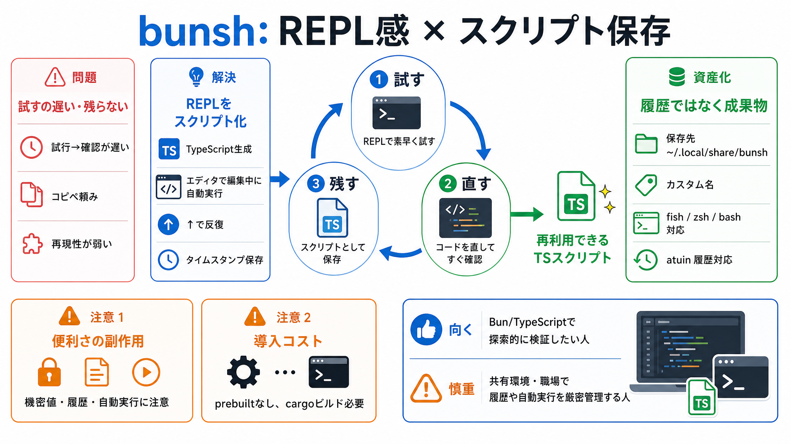

Fish Shell vs Bash vs Zsh - Complete Comparison 2026
Title: Fish Shell vs Bash vs Zsh - Complete Comparison 2026 # Fish Shell vs Bash vs Zsh - Complete Comparison 2026. An h…

BUNSH
bunsh は、Bun（JavaScript/TypeScriptランタイム）でスクリプトを作る体験を、素早い試行錯誤に寄せます。試す→直す→残すを一続きにして、最後は再利用しやすい形に残します。
PROBLEM
手作業で「コマンドを試す→スクリプトにまとめる」を行うと、往復コストが増えます。REPL的なテンポは欲しいが、結果を資産として残せないと学習・再利用が止まります。
試行→確認の回転が遅い／手順が固定化してしまう
試したものが消える・再現性が弱い（コピペ頼みになる）
METAPHOR
bunsh の狙いは、REPLのように素早く試しつつ、最終的には “きれいなスクリプト” として手元に残すことです。探索の速度と整形の価値を同時に取ります。
実行して結果を見る（探索）（検証）
同じ土台を更新して回す（↑で反復）
ローカル保存で再利用しやすくする
ARCHITECTURE
bunsh を起動すると TypeScript スクリプトを生成し、エディタで編集している間に実行されます。さらに同じスクリプトをアップアロー（↑）で反復更新できます。
TypeScript
編集中に結果が返る（即時フィードバック）
アップアローで同じスクリプトを更新→再実行
タイムスタンプ付きで保存（再現性）
REPEAT
bunsh は保存先として ~/.local/share/bunsh を使い、タイムスタンプ付きでファイルを残します。カスタム名も可能で、後から参照・コピーしやすい構造を狙っています。
~/.local/share/bunsh
タイムスタンプ＋（必要なら）カスタム名
HISTORY
bunsh はシェル履歴を自動編集し、反復の痕跡が自然に履歴へ反映される設計です。加えて atuin 履歴マネージャにも対応します。
fish
zsh / bash
atuin
DX
エディタの $EDITOR が TypeScript に対応している場合、bunsh はリポジトリの src/tsconfig.json を自動コピーし、LSP を得られるようにします。
$EDITOR が TS 対応（LSPが動く環境）
src/tsconfig.json を自動コピー
DISTINCTION
READMEの趣旨では、bunsh は単なる「コマンド置換」ではありません。REPLのように速く試しつつ、反復後にスクリプトとして残す点を中核に置いています。
試行のテンポ（REPL感）＋ 保存されるスクリプト
単発の置き換えツールではない（反復と資産化が目的）
PROCESS
作成した TS スクリプトを編集し、アップアロー（↑）で前回の生成内容をベースに実行し直すことで、変更→確認を素早く回します。実装の粒度（差分適用か全文再生成か）はREADMEだけでは断定できません。
編集 → 実行 → 結果確認
↑ → 同じスクリプトを更新して再実行
RISKS
履歴を自動編集する以上、機密情報がコマンドや引数に含まれる場合は履歴に残るリスクをゼロにできません。READMEにもマスキング等の明確な方針が見当たらないため、運用で確認が必要です。
機密値をコマンド直渡ししない／履歴方針を確認
自動実行は誤実行の可能性がある（破壊的コマンドは慎重に）
EVAL
READMEでは prebuilt version がまだなく、cargoでコンパイルが必要という導入上の摩擦が示されています。環境によってはセットアップ負担が増えます。
prebuilt 版：まだなし
cargo
でコンパイルCLOSING
bunshは「シェルで試し、編集し、最後にスクリプトとして残す」開発の流れを速くする可能性があります。反面、履歴連携と自動実行が絡むため、機密や運用ポリシーがある場では慎重に評価すべきです。
探索的な検証をBun/TypeScriptで回したい人
共有環境・職場で履歴や自動実行の副作用を許容できない人
Title: Fish Shell vs Bash vs Zsh - Complete Comparison 2026 # Fish Shell vs Bash vs Zsh - Complete Comparison 2026. An h…
Title: Fish Shell vs Zsh - Which Should You Choose? # Fish Shell vs Zsh - Which Should You Choose? A practical compariso…
# shell-completion. ### sigoden / argc-completions. {bash,zsh,fish,powershell,nushell}-completions for 1000+ commands. s…
Title: Fish Shell vs Zsh - Which Should You Choose? # Fish Shell vs Zsh - Which Should You Choose? A practical compariso…
Title: Fish Shell vs Bash vs Zsh - Complete Comparison 2026 # Fish Shell vs Bash vs Zsh - Complete Comparison 2026. An h…